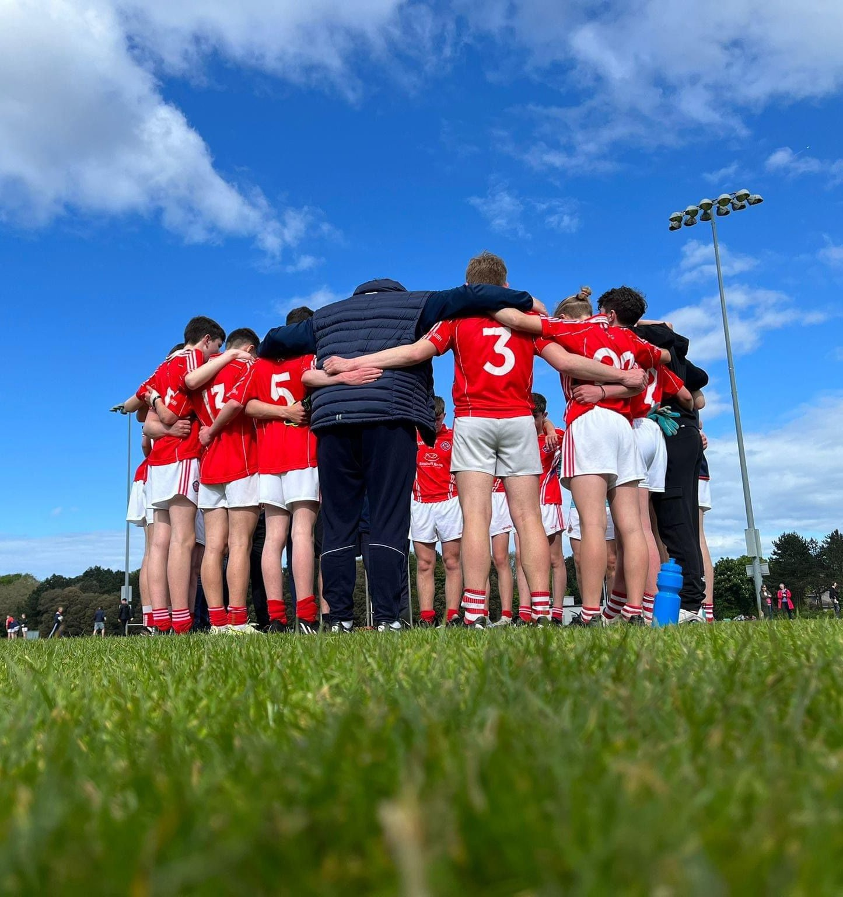
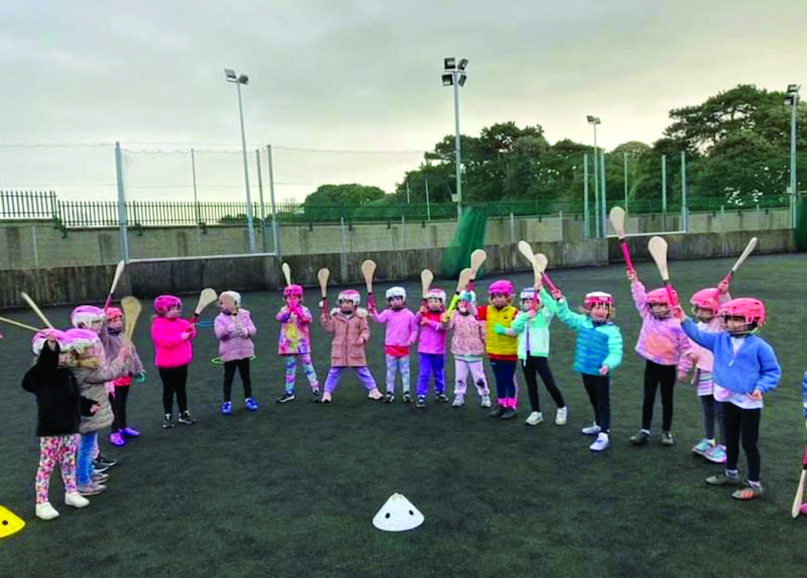
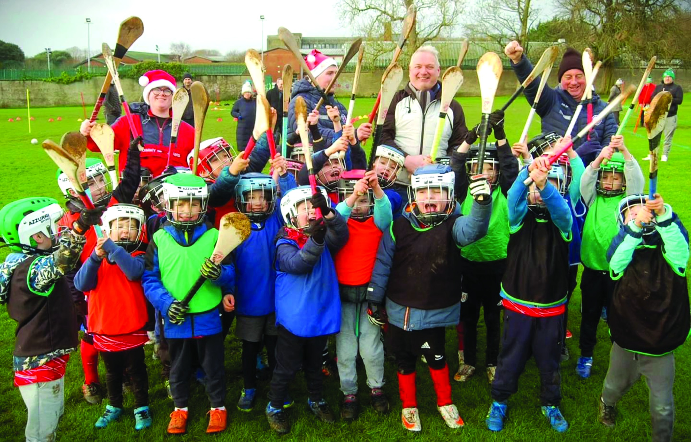
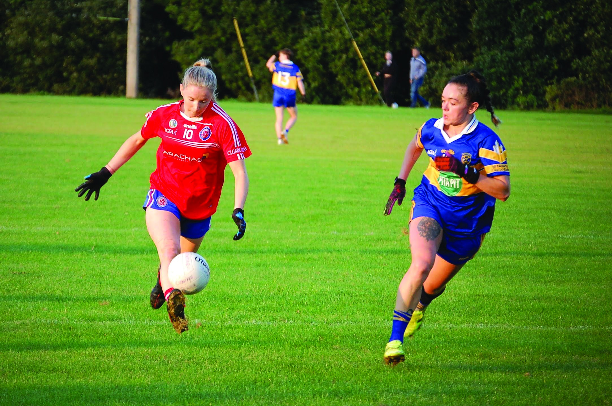
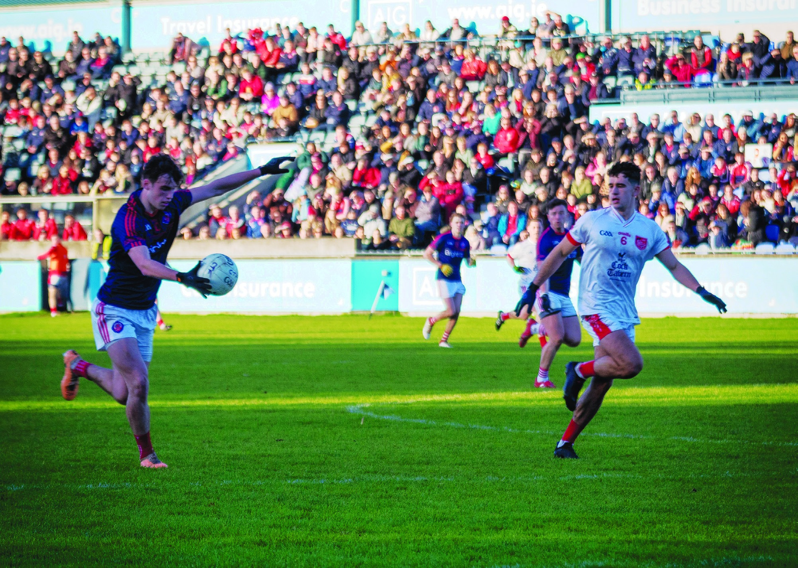

Coaching Pathway

Clontarf GAA Club are committed to ensuring that all our juvenile teams are as competitive as possible. That each player is constantly learning and will be in a better place when progressing to the next age level, and with the intention of ensuring each player can reach their full potential throughout their underage careers. By devising and developing our own “Player Pathway” we are creating the environment that all our young players “Play and Stay” with Clontarf GAA Club, not only for their playing careers but throughout their lives.
This resource is designed to help our coaches do the right thing at the right time for all our players.
BETTER COACHES = BETTER PLAYERS
Welcome to the Clontarf GAA player pathway. This pathway has been created to provide a structured, consistent framework to help guide coaches, managers, mentors and parents who play an active role in the development of our young players.
In order to give our young players the best opportunity to succeed at whatever level they may play and reach their full potential “doing the right thing, at the right time and in the right way” this document should be viewed as a route map which sets out the key characteristics and identifies the age appropriate content (technical, tactical, physical and team play) that should be coached or practiced at a particular age and stage of the player’s career.
Crucial to each player’s development across all stages of the player pathway is their athletic development. We encourage all those assisting the implementation of this pathway to refer to the Athletic Development Programme that we developed by the club a number of years ago. This valuable resource is accessible on the club website at clontarfgaa.com/documents.


| Stage | Age | Emphasis |
|---|---|---|
| Learn to Master the Ball | 4-6 | Should be about fun and participation with key emphasis on physical literacy and fundamental movement skills with the ball. |
| Learn to Use the Ball Well | 7-9 | Major skills learning phase where all the basic skills in football & hurling are learned. Emphasis on using both sides of the body. |
| Learn to Play Together | 10-12 | Emphasis on understanding how to play and work together as a team. |
| Learn about Positions and Decisions | 13-15 | The principles of play and applying good decisions increase Game Sense. |
| Learn to Perform | 15-18 | Combining all aspects of performance including decision making, higher physical demands of the game and coping with competition. |
| Game | Emphasis |
|---|---|
| Chasing Game | These games involve tagging and chasing where players perform skills, such as fleeing and dodging. These games are particularly appropriate for warm up activities. |
| Target Games | The simplest form of a game which challenges players to use the technique previously learnt is to aim into or at a target. Players have lots of time to perform the task without any distraction from other players. There is a low level of decision making. |
| Court Games | Divided court games require players to pass ball over an obstacle like a net or zone to a receiver. The level of decision making has increased but is limited. The use of other skills essential for team work such as communication, anticipation and spatial awareness become more apparent. |
| Field Games | These are games which require one team to act as the strikers/kickers and the opposition become the fielders retrieving the ball. The fielding team tries to limit the runs or scores by the striking/kicking team and at the same time try to get the opposition players out. Greater decisions have to be made in relation to where, when and how to move or play the ball and good spatial awareness is more important. |
| Part Invasion | These games require players to complete a task with limited or direct opposition. Such games encourage awareness of time and space but also help develop characteristics of team play e.g. support play and communication. Part invasion games allow players to develop positional sense and decision making with limited pressure from opposition. |
| Full Invasion | The core objective here is to move into an opponents territory in order to score. To achieve this, players must maintain possession of the ball, create & use space and attack a ‘goal’. The key element with invasion games is the number of players involved. The less space a player has, the less time he/she has, the more skill is required. |
| Skill | Result |
|---|---|
| Correct Hurley Size. | Yes/No |
| Dominant Hand Established. | Yes/No |
| Correct Grip (Ready, Lock, Swing). | Yes/No |
| Swinging Hurley Dominant Side Hitting a Stationary Ball 5 Times in a Row without missing. | Yes/No |
| Swinging Hurley Non Dominant Side Hitting a Stationary Ball 5 Times in a Row without missing. | Yes/No |
| Good Fluid Movement in Swing. | Yes/No |
| Ground Striking Ball a Distance of 10m Dominant Side. | Yes/No |
| Ground Striking Ball a Distance of 20m Dominant Side. | Yes/No |
| Ground Striking Ball a Distance of 10m Non Dominant Side. | Yes/No |
| Ground Striking Ball a Distance of 20m Non Dominant Side. | Yes/No |
| Ground Stop: Stopping a Moving Ball (coach rolls to child) 10m away 5 times in a row without missing. | Yes/No |
| Dribble Ball on Ground 20m while Jogging/Running. | Yes/No |
| Skill | Result |
|---|---|
| 2 Handed Bounce and Catch - 10 times in a row. | Yes/No |
| 2 Handed Bounce and Catch Jogging/Running 20m. | Yes/No |
| One Hand Bounce and Catch Dominant Hand 10 times in row. | Yes/No |
| One Hand Bounce and Catch Non Dominant Hand 10 Times in Row. | Yes/No |
| Throw and Catch to Yourself in a Stationary Position 10 Times in a Row. | Yes/No |
| Throw and Catch to Yourself Jogging/Running 10 Times in a Row. | Yes/No |
| Pick up a Ball as Many Times as Possible in 60 secs (Average is 15). | Yes/No |
| Pick up a moving ball 10 times in a row (coach or partner rolls ball). | Yes/No |
| Ground Kick at a target dominant foot. | Yes/No |
| Ground Kick at a target non dominant foot. | Yes/No |
| Kick from 2 Hands at a target (partner) dominant foot 10 times. | Yes/No |
| Kick from 2 Hands at a target (partner) non dominant foot 10 times. | Yes/No |
| Skill | Result |
|---|---|
| Ground Strike From a standing position and from the dominant side take a full swing and strike the ball on the ground a minimum distance of 13 metres between two posts that are three metres apart. | 4 out of 6 = Pass |
| Ground Strike From a standing position and from the non dominant side take a full swing and strike the ball on the ground a minimum distance of 13 metres between two posts that are three metres apart. | 4 out of 6 = Pass |
| Jab Lift Sliotar as Many Times as Possible in 60 secs (Average is 15). | 15 |
| Striking From Hand a Distance of 10m Dominant Side. | Yes/No |
| Striking From Hand a Distance of 10m Non Dominant Side. | Yes/No |
| Bouncing Ball On Hurley in Succession in 60 secs (Average is 25). | Yes/No |
| Chest Catch Coach throws ball/bean bag to child’s chest. Child catches ball with hand. Distance from coach 3m. | 4 out of 6 = Pass |
| High Catch Coach throws a ball over child’s head and child attempts to catch the ball. Distance from coach is 3m. | 4 out of 6 = Pass |
| Coach rolls ball to alternate sides. Child must pull on ball without turning to dominant side. Both sides. | 4 out of 6 = Pass |
| Skill | Result |
|---|---|
| Chest Catch Coach throws ball to child’s chest. Child catches ball using body. Distance from coach 5m. | 4 out of 6 = Pass |
| Low Catch Coach throws a bouncing ball to child’s feet. Child catches ball using hands. Distance from coach 5m. | 4 out of 6 = Pass |
| High Catch Coach throws a High ball to child. Child catches ball above head using hands. Distance from coach 5m. | 4 out of 6 = Pass |
| Kick from Hands From a standing position and from the dominant foot player Punt kicks the ball dropping with one hand a minimum distance of 13 metres to a partner for a catch. | 4 out of 6 = Pass |
| Kick from Hands From a standing position and from the non dominant foot player Punt kicks the ball dropping with one hand a minimum distance of 13 metres to a partner for a catch. | 4 out of 6 = Pass |
| Hook Kick From a standing position and from the dominant foot player Hook kicks the ball dropping with one hand a minimum distance of 13 metres between two posts that are three metres apart. | 4 out of 6 = Pass |
| Hook Kick From a standing position and from the non dominant foot player Hook kicks the ball dropping with one hand a minimum distance of 13 metres between two posts that are three metres apart. | 4 out of 6 = Pass |
| Solo Player Toe Tap Solo’s the ball as many times as possible in 60 secs (Average is 25). | 20 |
| Skill | Result |
|---|---|
| Frontal Block: Coach strikes 6 sliotars and player attempts to block the ball in each case. Emphasis on proper technique. | 4 out of 6 = Pass |
| Coach throws a ball over the players head and the player bats the ball back in the direction of the coach. Distance from coach to player = 3 metres. | 4 out of 6 = Pass |
| Players strike ball from the hand on dominant side. Under/over crossbar 15m/20m/25m = 6 attempts (2 at each distance). | 4 out of 6 = Pass |
| Players strike ball from the hand on non dominant side. Under/over crossbar 15m/20m/25m = 6 attempts (2 at each distance). | 4 out of 6 = Pass |
| Player solos with ball on hurley at near top speed for a distance of 30m without allowing ball to fall. | 4 out of 6 = Pass |
| Striking sliotar on the run from hand off dominant side over the bar from in front of goals 15m/20m/25m. | 4 out of 6 = Pass |
| Striking sliotar on the run from hand off non dominant side over the bar from in front of goals 15m/20m/25m. | 4 out of 6 = Pass |
| Player handpasses with dominant hand across the body to a receiver 3 metres away. | 4 out of 6 = Pass |
| Player handpasses with non dominant hand across the body to a receiver 3 metres away. | 4 out of 6 = Pass |
| Striking from the hand dominant side. Ball cannot touch ground and cannot go over the crossbar. Must hit back of net cleanly from 21m line. | 5 out of 6 = Pass |
| Striking from the hand non dominant side. Ball cannot touch ground and cannot go over the crossbar. Must hit back of net cleanly from 21m line. | 5 out of 6 = Pass |
| Long Strike a ball from the hand, from the ‘dominant’ side. A minimum distance before touching the ground of 32 metres i.e. from the 13 metre line over the 45 metre line. | 5 out of 6 = Pass |
| Long Strike a ball from the hand, from the ‘Non dominant’ side. A minimum distance before touching the ground of 32 metres i.e. from the 13 metre line over the 45 metre line. | 5 out of 6 = Pass |
| Skill | Result |
|---|---|
| Coach throws ball to child’s chest. Child catches ball using body. Distance from coach 5m. | 4 out of 6 = Pass |
| Coach throws a bouncing ball to child’s feet. Child catches ball using hands. Distance from coach 5m. | 4 out of 6 = Pass |
| Coach throws a High ball to child. Child catches ball above head using hands. Distance from coach 5m. | 4 out of 6 = Pass |
| From a standing position and from the dominant foot player Punt kicks the ball dropping with one hand a minimum distance of 13 metres to a partner for a catch. | 4 out of 6 = Pass |
| From a standing position and from the non dominant foot player Punt kicks the ball dropping with one hand a minimum distance of 13 metres to a partner for a catch. | 4 out of 6 = Pass |
| From a standing position and from the dominant foot player Hook kicks the ball dropping with one hand a minimum distance of 13 metres between two posts that are three metres apart. | 4 out of 6 = Pass |
| From a standing position and from the non dominant foot player Hook kicks the ball dropping with one hand a minimum distance of 13 metres between two posts that are three metres apart. | 4 out of 6 = Pass |
| Player Toe Tap Solo’s the ball as many times as possible in 60 secs (Average is 25). | 20 |
| Skill | Result |
|---|---|
| Free Puck From a standing position on the centre of the 20m line, roll - lift the ball and strike it, without handling, on the dominant side, to pass under the crossbar without touching the ground. | 5 out of 6 = Pass |
| Free Puck From a standing position on the centre of the 20m line, roll - lift the ball and strike it, without handling, on the non dominant side, to pass under the crossbar without touching the ground. | 4 out of 6 = Pass |
| Free Puck From a standing position 40 metres from goal strike from the hand, on the dominant side, over the crossbar. Two attempts to be made facing the centre of the goal, and two attempts to be made 20 metres from the right and left hand sides of the goal. | 4 out of 6 = Pass |
| Free Puck From a standing position 40 metres from goal strike from the hand, on the non dominant side, over the crossbar. Two attempts to be made facing the centre of the goal, and two attempts to be made 20 metres from the right and left hand sides of the goal. | 4 out of 6 = Pass |
| Long Strike a ball from the hand, on the dominant side, a minimum distance of 50 metres before touching the ground. | 5 out of 6 = Pass |
| Long Strike a ball from the hand, on the non dominant side, a minimum distance of 50 metres before touching the ground. | 5 out of 6 = Pass |
| Lift, Solo, Strike Run at least 4 metres to a ball on the 65 metre line. Lift the ball. On the run using the two handed jab lift, solo run with the ball (hopping or stationary) on the hurley to a marker (flag) 45 metres away; without stopping, either strike the ball with the hurley or hand pass the ball (without dropping the hurley) a distance of at least 2 metres to pass between two posts set two metres apart without touching the ground. | 4 out of 6 = Pass |
| Skill | Result |
|---|---|
| Ball Feint Players carry the ball 10m, ball feint a defender and shoot for goal 20m away. | 6 out of 6 = Pass |
| Fist Pass From a standing position and from the dominant hand player fist passes the ball a minimum distance of 13 metres to a partner for a catch. | 4 out of 6 = Pass |
| Fist Pass From a standing position and from the non dominant hand player fist passes the ball a minimum distance of 13 metres to a partner for a catch. | 4 out of 6 = Pass |
| Receiving ball at pace Player stands 30m away from coach or partner. Ball is delivered with the foot for a one bounce catch. Receiver sprints to the ball and attempts to catch and control. | 5 out of 6 = Pass |
| Shooting at angles From a standing position 25 metres from goal kick, on the non dominant side, over the crossbar. Two attempts to be made facing the centre of the goal, and two attempts to be made 20 metres from the right and left hand sides of the goal. | 4 out of 6 = Pass |
| Shooting at angles From a standing position 25 metres from goal kick, on the non dominant side, over the crossbar. Two attempts to be made facing the centre of the goal, and two attempts to be made 20 metres from the right and left hand sides of the goal. | 4 out of 6 = Pass |
| 1 v 1 Near Hand Tackle Players pair off on the 45m line one going for goal and other the tackler. The tackler attempts to make a good technique attempt at a near hand tackle. Look at the tackler for good technique. 3 dispossessions equal a pass. | 3 out of 6 = Pass |


| Age Group | Coach/Player Ratio | Duration |
|---|---|---|
| Nursery | 1:4 | 45 Minutes |
| Under 7, 8 | 1:6 | 45 minutes |
| Under 9, 10 | 1:8 | 45/50 Minutes |
| Under 11, 12 | 1:8 | 50/60 Minutes |
| Under 13, 14 | 1:8 | 60/70 Minutes |
| Under 15, 16 | 1:10 | 70/80 Minutes |
| Under 17, 18 | 1:12 | 70/90 Minutes |